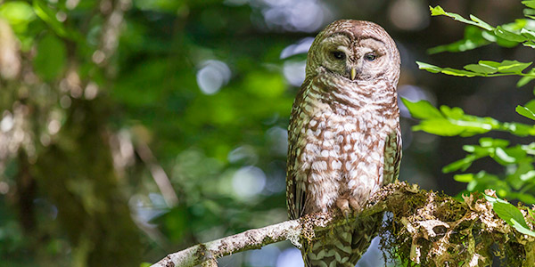
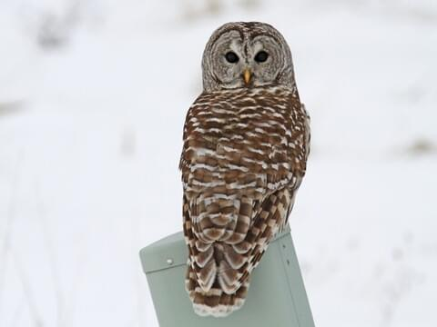
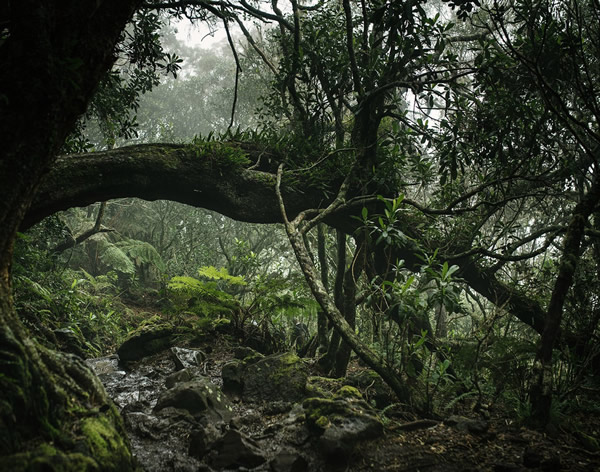

The Habitat of the California Spotted Owl
As mentioned, the California spotted owl primarily lives throughout California's old-growth forests (their yearlong habitat range can be seen on the map to the right). This is because they have a very specific habitat preference and the structure and characteristics of old-growth trees are ideal for the species. For example, old-growth trees often have broken tops, deformed and coiled limbs, and many sizeable holes perfect for spotted owl nesting sites. Additionally, old-growth forests boast a high canopy enclosure that provides the spotted owl with shelter and protection. It is also important to note that the California spotted owl tends to avoid clearcut, recently logged, and brushy areas because it leaves them without a place to forage and without shelter.

Threats to the California Spotted Owl: The Barred Owl
Aside from habitat destruction (which will be discussed more later), the only recognized threat to the California spotted owl is competition with the barred owl. The barred owl is the spotted owl's eastern cousin, also residing in forests and feeding on small mammals at night. Although the two species are alike in many ways, the barred owl has a much broader habitat tolerance and is larger and more aggressive than its western counterpart. About 100 years ago, habitat range would have also been a major difference between the two species, considering the spotted owl could only be found on the west coast, and the barred owl was primarily residing in New England and the Midwest. However, since the early 1960s, the barred owl has been dispersing westward, aggresively taking over the spotted owl's nesting sites and attacking them for food. The map to the right shows the barred owl's current yearlong habitat range in California.

Threats to the California Spotted Owl: Logging
As mentioned, the California spotted owl has a specific habitat preference for old-growth forests that have seen little human activity. As a result, they are highly susceptible to fragmentation and populations are usually clustered in disconnected areas of suitable habitat surrounded by larger areas of unsuitable habitat. In recent year, however, the areas of unsuitable habitat have been growing while the areas of suitable habitat have been shrinking. This is largely due to the logging industry that places a high commercial value on old-growth trees and denounces the conservation of the spotted owl as less important than the welfare of local economies.

Threats to the California Spotted Owl
Unfortunately, the ongoing logging of old-growth forests will continue to cause spotted owl habitat destruction, and ultimately, declining numbers of the species. One can observe California's forested areas on the aerial map to the right. Note how the heavily forested regions greatly overlap with the California spotted owl habitat range shown on the first page.
The California Spotted Owl